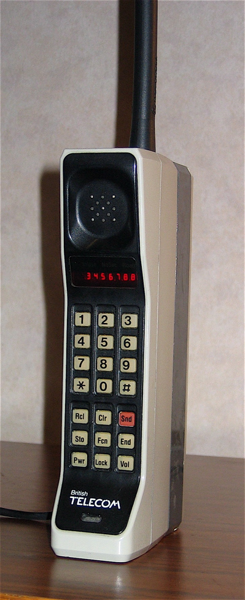

Motorola DynaTAC 8000X
The first handheld cell phone — the whole device is the handset, and every call is a dial-then-Send ritual

Overview
The Motorola DynaTAC 8000X, unveiled on March 6, 1983 and fully commercially available from April 1984, is the first handheld cellular telephone. It was 10 inches (25 cm) tall, weighed 2.5 pounds (1.1 kg), and cost US$3,995 — earning it the nickname "the brick." For the first time a mobile phone could connect to the cellular network without a vehicle installation, a bulky briefcase transceiver, or a mobile operator.
The DynaTAC's defining interaction is that the entire device is the handset — there is no separate earpiece or base. A single-line LED display serves as the dialing buffer: the user types a number on the 12-key keypad, watches it build on the display, then presses a dedicated "Snd" (Send) key to seize a cellular channel and place the call. This modal two-phase dial-then-Send gesture — type, then explicitly commit — is the direct ancestor of every mobile "green call button" on Earth. The 8000X also introduced a 30-number store-and-recall memory, recalled with the "Rcl" (Recall) key, and a "Lock" key to secure the keypad.
Development ran from the early 1970s, when Martin Cooper made the first publicized handheld cellular call on a prototype on April 3, 1973. The engineering program was led by John F. Mitchell, with Rudy Krolopp heading the handset design. The first commercial wireless call was placed October 13, 1983. The DynaTAC ran on AMPS, was succeeded by the MicroTAC in 1989, and was discontinued in 1994. It occupies a foundational place in the National Museum of American History collection.
Deep dive
Before the DynaTAC, telephones were a handset connected to a base or a vehicle-mounted transceiver. The DynaTAC collapsed this: there is no separate earpiece — the user holds the entire phone to their head, dials and speaks on the same body. This unified form factor made the phone a single embodied object, with the LED display as the visual scratchpad for the number being assembled.
The interaction is explicitly two-phase and modal. The user types digits into the LED display — this is pre-connect state, reversible, nothing has happened on the network. Pressing "Snd" (Send) seizes a channel and commits the call. This separation of composing from sending is the ancestor of the modern mobile call gesture and of countless commit gestures in embedded and mobile computing. A separate "End" key tears the connection down; "Lock" secures the keypad against accidental calls.
Beyond the 12-key pad, the 8000X carried nine special keys: Rcl (recall), Clr (clear), Snd (send), Sto (store), Fcn (function), End, Pwr (power), Lock, and Vol (volume). The Rcl/Sto pair implements a 30-number memory — store a number under a two-digit code, recall it later. This is an early example of on-device memory as a first-class interaction feature, long before address books were graphical.
The DynaTAC is the museum's first cellular/mobile phone. It extends the telephony narrative — Novation CAT (acoustic coupler), Hayes Smartmodem 300 (AT commands), Minitel (videotex terminal), TI Silent 700 (portable terminal), ROLM CBX (software-key PBX), IBM 6:5 (voice-as-token dictation) — to the birth of the portable cellular handset. Where those bridged computer and telephone through coupling rituals, the DynaTAC made the telephone itself a networked computer terminal.
Team & pioneers
- Motorola. Manufacturer.
- Martin Cooper. Led the team; made the first handheld cellular call on a 1973 prototype.
- John F. Mitchell. Chief engineer for mobile communication; championed the portable cell phone.
- Rudy Krolopp. Led the handset design.